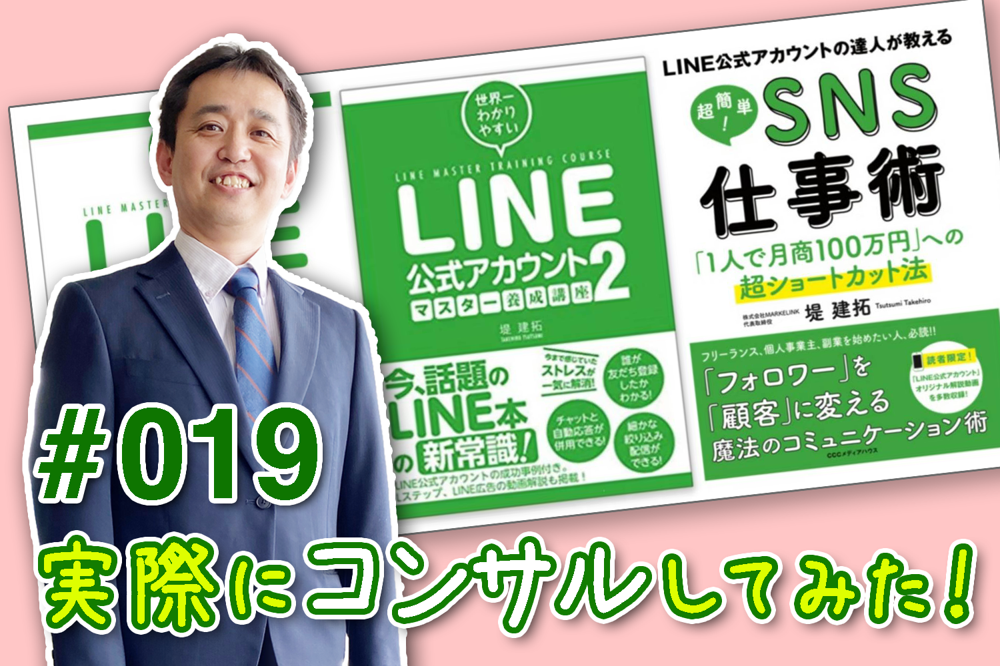
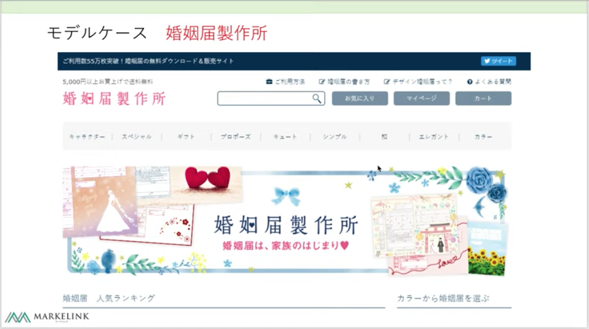
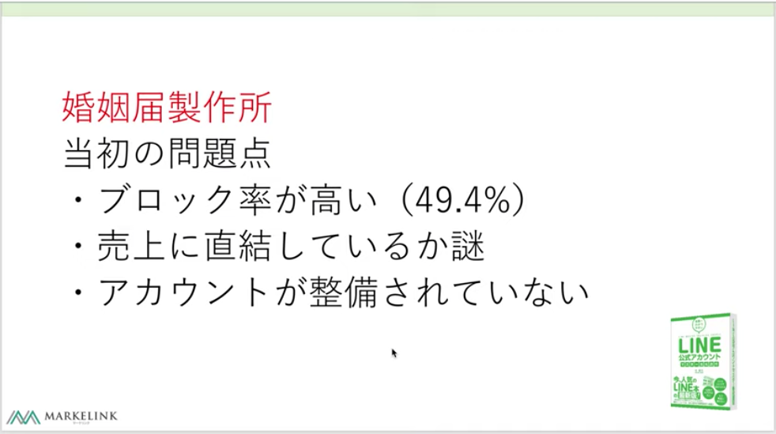
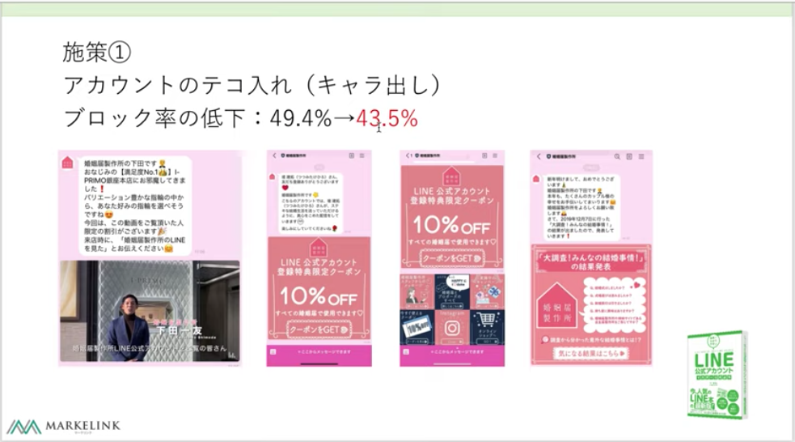
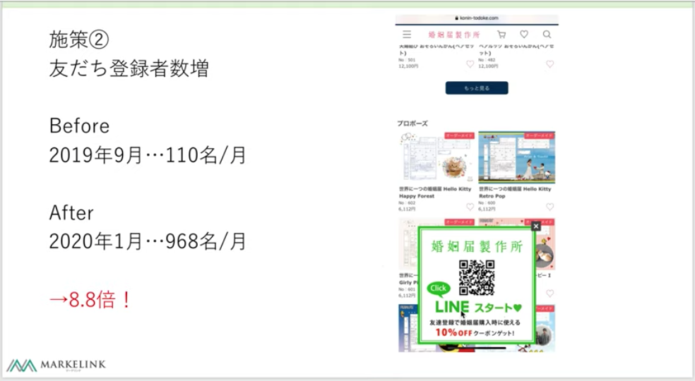
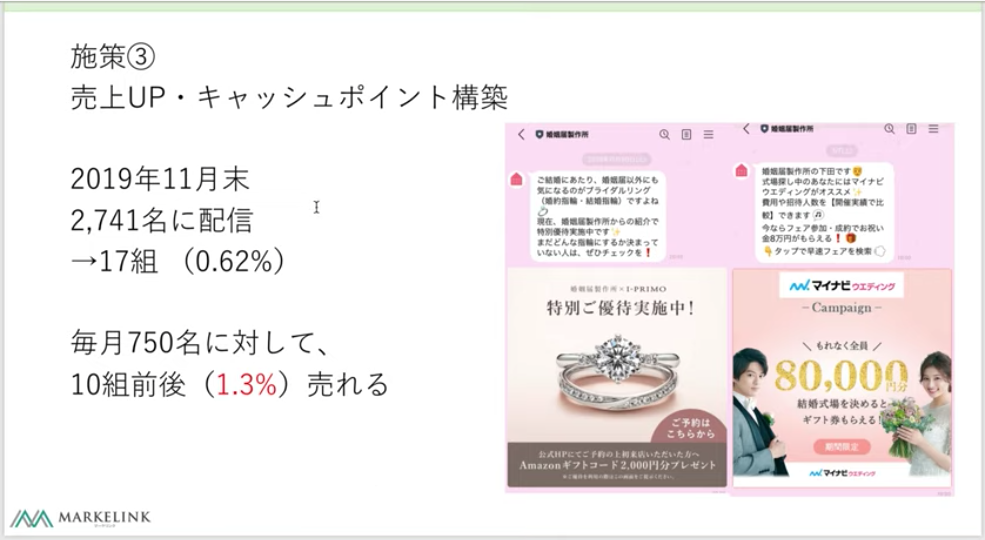

#019 ある企業の公式アカウントを徹底改善！

こんにちは！matsumotoです。今日は、matsumotoの『師匠』がLINE公式アカウントをお使いのお客様のアカウントを徹底改善したエピソードについてお話してみようと思います！ 僕の『師匠（株式会社マーケリンク 代表取締役・堤建拓氏）』とは、僕がLINE公式アカウントのコンサルタントを目指すきっかけになった人で、堤氏から教わったことを元に僕は現在マーケリンクのパートナー企業コンサルタントとして活動しています。
今回のお客様は、いわゆるネットショップを運営されていて、もうすでにLINE公式アカウントを利用されていました。当然、実際に使っているのだからそのメリットを十分に生かしているはず、、、が？！なぜか全然うまくまわっていなかったみたいです。なぜでしょう？ここから先は、師匠に代わって僕がコンサルタント役としてお話しますね（ややこしいな 汗）。
『婚姻届製作所』さん

その時のクライアントとは、可愛らしいデザインの婚姻届を製作するというECサイトを運営する『婚姻届製作所』さんでした。これから結婚する若い夫婦（特に花嫁さん）にとって、婚姻届は一生の記念となる大切なものです。ネットでオリジナルデザインの婚姻届を発注でき、それを役所にも提出できるということで、その時すでにある程度人気はありました。ネットで注文できる人たち（スマホやネットを日常的に使いこなしている）がターゲットなのですから、本来LINE公式アカウントとは相性がいいはず、でした。。。
大きな問題を抱えていた

婚姻届製作所さんは、当時（2019年9月）すでにLINE公式アカウントを利用されていました。しかし、「これが何の役に立っているのか、いまいちよく分からないんです」というご相談をいただき。。。実際にアカウントを見せていただいたところ、到底『活用できている』とは言い難い状況でした。最初に済ませておくべき設定がほぼ全く出来ていなかったし、何より第一に、見込み客（友だち登録してくれた人たち）からのブロック率が高かった！その数、およそ50%！！ せっかく友だち登録してもらっても、その後ほぼ半数からブロックされていたのです。
※ブロック率の確認方法〜LINE Official Account Managerにログインし、「分析」タブを選択するとブロックされた人数が表示されるので、ブロックされた人数÷実際の友だち数でブロック率を算出することができます。
当初の配信は、週一回ペース
これはひとつひとつ、基本的なことから確認せねば！となり、まずは「普段、どんなことを配信しておられますか？」とヒアリングを始めました。配信は、週に一回のペースだったそうで、この点はおそらく問題なさそうでした。ただ、配信した日に『友だち』から特になんのリアクションがあったわけでもなく、「LINE公式アカウントを使い続ける意味ある？」となっていたようです。。。つまり、LINE公式アカウントを開設して、わざわざ毎週配信をしているけど、それが売り上げにつながっているのか？？？そこが全く見えない状態だったのですね。LINE公式アカウントについての知識と理解が不十分な場合、よくある話です。
そもそも最初の仕込み作業すら出来ていなかった…
さらに突っ込んでお話を聞いてみると、どうも基本的な挨拶メッセージやリッチメニュー・リッチメッセージの設定すらされていませんでした。これでは『友だち』から見て、『婚姻届製作所』さんアカウントの「いいところ」や「お得感」が何も伝わって来ない。。。どころか、初期設定の（どの業種でも使える無難な）「挨拶メッセージ」のせいで、かえって友だち登録してくれた人たちから迷惑がられていた可能性が高い、ということも後から判明しました。
アカウントの根本的改善に着手！
「これは一からやり直したほうがいいです！」とお伝えし、まずはアカウント設定から改善していくことにしました。具体的には❶ちゃんとオリジナルの挨拶メッセージを作成する、❷オリジナルのリッチメニューを作成する、❸オリジナルのリッチメッセージ を作成する、という設定をしただけですが、これには大きな意味があります：
「オリジナル」である、というのは、すなわち「企業をひとつのキャラクターとして打ち出す」ということです。この会社ってどんな会社なの？どういうサービスをしてくれるの？ユーザーにとって、どんな利点があるの？ということを、実際のお客様の立場や気持ちを想像しながら考え、アピールする作業のことです。この「キャラを際立たせる」ということのために、例えば会社の担当者の顔写真や自己紹介をリッチメッセージとして発信したり、他にもこの会社ならでは！という利点やサービスについて、文章や画像で丁寧に作り込んだのです。
特に「担当者の顔を見せる」という斬り口は反応がありました。人って、やはり人間に興味を示すものなんですね。最初は聞いたこともなかった会社でも「この担当者さん、なんだか面白そうな人だな…」などと思ってもらい、会社にも興味を持ってもらえた（友だち登録してもらった）のです！ もちろん、写真やテキストだけでなく、動画なども活用し、サイトをご利用いただく時に『「LINEで友だち登録している」「写真や動画を見た」と言ってもらえば、◯◯%割引します！』というような説明も加えておきました。
リッチメニューや配信を改善！

まずは、最初にリッチメニューに着手しました。結婚前の若い人たち（『婚姻届製作所』様のターゲット層）が興味を持ってくれるような内容を浮かべ、具体的には「プロポーズのすべて」という情報を発信するボタンや、開催中のキャンペーン、スタッフ紹介など、リッチメニュー は特にこれから結婚を控える『花嫁さん』が興味を持ってくださるような内容と可愛らしいデザインを心がけました。
そして、配信についても新たな工夫を凝らしました。そもそも『婚姻届』とは、一度作成（新規顧客）してしまえば普通はそれでお客様が離脱していくものです。でも、そうではなく、結婚してから先もお客さんにとって役に立つ情報を配信し続け、これからも友だちでいたいな、と思ってもらえるようなアイディアをひねってみました。たとえば、「大調査！みんなの結婚事情」など、すでに実際に結婚した人たちの体験談について調査情報を配信したり、ほかにも結婚届を製作した人向けのお得なサービスなど、結婚届を製作しただけで友だち離れしてしまうのを防ぐような内容を考案して配信したのです。
さらに、クーポンを作成
以前は、「LINE公式アカウントの友だち登録してね」というだけの、初期設定の機械的なメッセージしか活用できていなかったようでしたが、そこは一度相手の立場になったつもりでその気持ちを考えてみるべき！ これで友達登録したくなる訳がないですよね？ ということをお伝えし、こちらもこれから友だちになってもらう人の気持ちを想像し、お得感を感じてもらえるよう、「友達登録してくれたら10%OFFクーポンを差し上げます！」という「クーポン」を作る、ということにしました。これでなんと！ 毎月の友だち登録者数がどんどん増えていきました。得をするなら登録する、という人が非常に多いことがよく分かりました😁
サイトにもクーポンのポップアップバナーをつけた！

そもそも毎月ある程度友だち登録があった『婚姻届製作所』さんでしたが、ブロック率のことがあるので、もっと増やさねば！ということで、さらに「婚姻届製作所」のECサイトにもLINE公式アカウントのクーポンである「友だち登録で10%OFF！」というQRコード付きのポップアップバナーを表示させるようにしました。これはサイトを訪れてくれた人に向けてぴょこん！とサイト下部に表示される仕掛けで、これで、3ヶ月ほどかかって毎月の友だち登録者数が1,000名/月を超えるようになり、累計で非常に大きな成果をあげることができました！！ シンプルなことでも、丁寧に全方向から仕掛ける、という戦略が功を奏した結果ですね。最近では、常にそのペースで友達数が増え続けています。
一番大切な「売上」との関係

このように、堤氏はどんどん顧客の抱えていた問題を解決していったのですが、最後に「それがどれだけ売上につながったのか？」というお話について。これが一番大切な問題です！ いくら友だち登録者数が増えても、商品を買ってもらえなければただの自己満足で終わってしまうので。また、LINE公式アカウントは、そういう過ちに陥りがちなツールでもあります。
毎月一定の友だち登録数と売上を上げるため、『婚姻届製作所』さんは同業界の他社（有名婚約指輪店、結婚式場など）とタッグを組み、それぞれ同時に「商品を購入してもらったら特別優待（Amazonギフト券プレゼントなど）を受けられる！」というような人海戦術的配信を行いました。
これが効果抜群でした！ 具体的な数字（婚約指輪店さんの配信）でいうと、一度の配信で約2,700組にメッセージ配信を行い、17組が指輪を購入してくださったという結果です。率でいうと、たった0.6%…と思われるかもしれませんが、結婚指輪は大体10〜20万円以上という高価なお買い物です。この率でも、売上でいうとかなりの額を一回の配信で稼ぎ出したことになります。たった一回の配信で十分売上に貢献できました（全組が単価20万円の指輪を購入してくれたとすると、240万円の売上）し、結婚式場の予約にいたっては、さらに一桁上を行きますので、これがどれだけ大きな成果かお判りいただけるでしょう。
このケースについては、自社の売り上げだけにとどまらず、「これから結婚する人はどんなサービスを利用するのか？」ということをしっかり考え、結婚を控えた人たちが婚約指輪を買ったり、結婚式場を予約する、というつながり（同業界の他社とのタッグという作戦）を思いついた点が成功の秘訣でした。
こういう配信を、毎月新しい友だち登録者に行い、ある程度のブロックはあるものの一定の売り上げを保つことができるようになりました。額にして、200〜300万円の売上と聞いています。もちろん、「婚姻届」のみの配信も行っているので、そちらも堤氏が改善に乗り出してから友だち登録数は9倍近く、１配信ごとの売り上げも200万円台と、過去最高の売り上げを上げることができました！
これからLINE公式アカウントの利用をお考えの皆さまへ
このように、LINE公式アカウントとは、ただ導入するだけで勝手に利益を産んでくれるものではありません。きちんと会社のキャラとお客様の気持ちに沿ったサービス戦法を考え、手間暇かけて構築したことで、高い売上をキープすることができるツールであることを証明できました！これから導入を考えておられる皆さまも、ぜひこの事例をご参考に、自社の戦略を練ってみてください。もちろん、プロである私たちコンサルタントにも、ぜひお気軽にご相談ください！さまざまな事例の経験がありますので、「きちんと売上を上げるアカウント」にすべく、サポートさせていただきます。
それでは、今週はここまで！次回は年明け後の7日(月)配信予定です。みなさま、どうぞ良いお年をお迎えください！
まずはLINE公式アカウントを開設しましょう！
●LINE公式アカウントの開設方法はこちら
●LINE公式アカウントをオススメする理由はこち
●LINE公式アカウントでできることはこちら
●Lステップでできることはこちら